wget http://bl831.als.lbl.gov/example_data_sets/ALS/831/Gd_lyso1/ALS831_lyso_Gd_001.imgThe SMV format always has a text header, and it is almost always 512 bytes. The top of the header will tell you how many bytes, so you can check with the unix "head" command:
head -n 2 ALS831_lyso_Gd_001.img
{
HEADER_BYTES= 512;
So now you know its definitely 512 bytes, and you can read the whole thing like this:
head --bytes=512 ALS831_lyso_Gd_001.img
{
HEADER_BYTES= 512;
DIM=2;
BYTE_ORDER=little_endian;
TYPE=unsigned_short;
SIZE1=3072;
SIZE2=3072;
PIXEL_SIZE=0.102592;
BIN=2x2;
BIN_TYPE=HW;
ADC=fast;
CREV=1;
BEAMLINE=ALS831;
DETECTOR_SN=926;
DATE=Tue Jun 26 09:43:09 2007;
TIME=0.096288;
DISTANCE=249.98;
TWOTHETA=0.00;
PHI=342.000;
OSC_START=342.000;
OSC_RANGE=1.000;
WAVELENGTH=0.979340;
BEAM_CENTER_X=154.96;
BEAM_CENTER_Y=155.91;
DENZO_X_BEAM=159.25;
DENZO_Y_BEAM=154.96;
}
Some of these are more important to the end user than others, but most
modern beamlines put the correct values into the headers. However, as
exemplified by the direct-beam center, the "correct" value depends on which
software package you plan to use to process the images.
Denzo/HKL,
mosflm,
XDS and the native viewer
adxv
all use different conventions for repesenting the beam center,
so make sure you use the right one for your program.To look at the pixel values yourself, use the unix "od" utility:
od -t u2 --skip=512 ALS831_lyso_Gd_001.img | head 0001000 8224 8224 8224 8224 8224 8224 8224 8224 * 0001060 10 0 0 0 0 0 0 0 0001100 0 0 0 0 0 0 0 0 * 0031000 0 0 40 40 40 16 24 38 0031020 47 42 32 27 40 43 36 33 0031040 40 42 38 34 48 43 50 37 0031060 27 43 39 43 43 35 35 38 0031100 46 40 31 37 36 29 26 52you can also inspect this image in adxv or any other X-ray image viewer and see that the first few pixels in the upper left corner really do have value 8224 (which is not typical, but convenient here), followed by a few rows of zeroes, and then followed by the actual active detector pixel values.
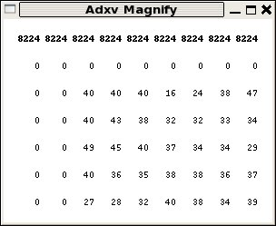
For ADSC detector images an offset value of "40" is used to denote zero photons. This is because the signal is stored as unsigned integers, and negative values would wrap-around to an overload. The CCD read-out noise level here is about rms 3 pixel levels (aka ADU), so an offset of 40 is safe.
Although often incorrectly referred to as "counts" a change of "1" in the integer used in this file to represent a pixel value does not neccesarily mean one X-ray photon. For this reason the pixel level value is more accurately referred to as an "area detector unit" (ADU) and the "gain" of the detector tells you the ratio of ADU per photon. The gain depends not only on the senitivity of the detector (which varies with wavelength, incidence angle, and other factors), but also on the desired binning, and the setting of the amplifier before the analog-to-digital converter (ADC). Because of this, the gain has little to do with the "quality" of the detector, but it is still important to give the right value to your data processing package. In the case of this image the gain is 1.8 ADU/photon.
You can also look at SMV images with the popular image display and manipulation package ImageMagick:
display -depth 16 -colorspace GRAY -endian LSB -size 3072x3072+512 GRAY:ALS831_lyso_Gd_001.imgalthough you may need to "normalize" in the GUI before you can see anything. This is because most of the pixel values are smaller in the full 16-bit range of the pixels, so they look black. And yes, you can also use ImageMagick to convert X-ray images to "regular" image file formats:
convert -depth 16 -colorspace GRAY -endian LSB -size 3072x3072+512 GRAY:ALS831_lyso_Gd_001.img -normalize -resize 1024x1024 -negate smaller.jpg display smaller.jpgand then convert it back, after recovering the header from the original image:
head --bytes=512 ALS831_lyso_Gd_001.img >! jpeged.img convert smaller.jpg -negate -resize 3072x3072 -depth 16 -colorspace GRAY -endian LSB GRAY:- >> jpeged.img adxv jpeged.img 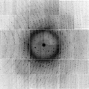 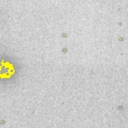If these unix commands don't work, then you are probably using bash. You will find a file named "!" in this case. Type the command "tcsh" to switch to a shell that supports this example formatting. (if you insist on usin bash, then you should know bash syntax).
Once you are using tcsh and examining jpeged.img in adxv
you will notice the X-ray data in the image didn't really survive:
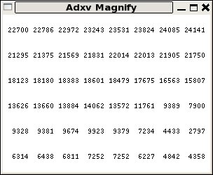
The pixel values are all huge, the spots are overloaded, and the image is blury.
This is becuase we converted it to jpeg, which looses information, and we also normalized it. If we don't do these things, we can preserve
the X-ray data:
convert -depth 16 -colorspace GRAY -endian LSB -size 3072x3072+512 GRAY:ALS831_lyso_Gd_001.img -compress lzw adsc.tif head --bytes=512 ALS831_lyso_Gd_001.img >! tiffed.img convert adsc.tif -depth 16 -colorspace GRAY -endian LSB GRAY:- >> tiffed.img adxv tiffed.imgIf everything worked, then the file tiffed.img should be precisely identical to the original file ALS831_lyso_Gd_001.img. You can confirm this with the unix program cmp: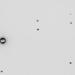
cmp ALS831_lyso_Gd_001.img tiffed.imgwhich will output nothing if the files are indeed identical.
Now, you can use any of the features of ImageMagick to edit the image, such as blanking off the beamstop:
head --bytes=512 ALS831_lyso_Gd_001.img >! noBS.img convert adsc.tif -depth 16 -colorspace GRAY -endian LSB -draw "circle 1513,1554 1513,1664" GRAY:- >> noBS.img adxv noBS.img 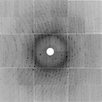 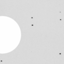note that adxv and ImageMagick use the same x-y coordinate conventions.
Another trick is to subtract the background using a median filter:
convert adsc.tif -median 15 smooth.tif convert -fx 'u-v+0.00061' adsc.tif smooth.tif diff.tif head --bytes=512 ALS831_lyso_Gd_001.img >! spots.img convert diff.tif -depth 16 -colorspace GRAY -endian LSB GRAY:- >> spots.img adxv spots.img 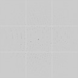 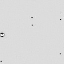Which could be useful for autoindexing or raster-based location of crystals.
wget http://bl831.als.lbl.gov/example_data_sets/SLS/X06SA/lyso/lysozym-1_1_00001.cbf adxv -sa lysozym-1_1_00001.cbf pilatus.img adxv pilatus.img & 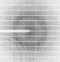 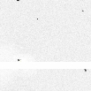Notice that the last command blacked-out the beamstop shadow. Yes, you can process SMV images from a Pilatus and it will not hurt your data. You just need to make sure the processing program has the right idea about invalid pixels.
convert -depth 16 -colorspace GRAY -endian LSB -size 2463x2527+512 GRAY:pilatus.img pilatus.tif head --bytes=512 pilatus.img >! pilatus_noBS.img convert pilatus.tif -depth 16 -colorspace GRAY -endian LSB -draw "rectangle 0,1203 1270,1321" GRAY:- >> pilatus_noBS.img adxv pilatus_noBS.img 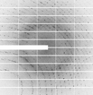 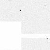
One problem, however, is that the SMV format typically only supports 16 bits and the Pilatus images have 20 bits. But SMV does support other data types, such as 32 bit integers. You convert those like this:
adxv -smv32bits -sa lysozym-1_1_00001.cbf pilatus32.img adxv pilatus32.img &How can you tell if an SMV file is 16 or 32 bits? Look at the header. It is text, and not hard to understand:
head --bytes=512 pilatus32.img
{
HEADER_BYTES= 512;
COMMENT=Written by adxv;
DIM=2;
SIZE1=2463;
SIZE2=2527;
TYPE=unsigned_short;
BYTE_ORDER=little_endian;
DISTANCE=380.000;
PIXEL_SIZE=0.172000;
WAVELENGTH=0.999900;
BEAM_CENTER_X=211.30;
BEAM_CENTER_Y=219.39;
TYPE=long_integer;
}
Note that the data type is mentioned twice, but the last one is correct: long_integer, or 32 bits.
So, why not black out the beamstop in 32 bit mode all the time? Well, ImageMagick doesn't really fully support 32 bits. And then there is some confusion about signed or unsigned pixels. If you try this:
convert -depth 32 -colorspace GRAY -endian LSB -size 2463x2527+512 GRAY:pilatus32.img pilatus32.tif head --bytes=512 pilatus32.img >! pilatus32_noBS.img convert pilatus32.tif -depth 32 -colorspace GRAY -endian LSB -draw "rectangle 0,1203 1270,1321" GRAY:- >> pilatus32_noBS.img adxv pilatus32_noBS.img & 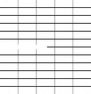You will see that the beamstop is zeroed out, but all the data has been changed to zero as well. Different versions of ImageMagick will do different things here.
You can probably see that one can do a lot with adxv and ImageMagick, but sometimes the manipulations you want to make on the data are hard to "explain" to ImageMagick, and definitely prone to round-off error if you are working with only integers and multiplying and dividing by things. This is why you might want to work in floating-point, and convert to integers only at the last step. This is why my nearBragg, nonBragg, and nanoBragg simulators always output a "floatimage.bin" file. So you don't have to re-run the simulation if all you want to do is something simple, like change the overall scale. But, when you convert back to X-ray image format it is convenient if that converter understands how to handle overloads and zeroes and the like. For simulations, it is also convenient to be able to re-do the noise, perhaps with a different random number seed. This is why I wrote noisify. But first, you might want to convert the X-ray diffraciton image in front of you into floating-point values, so that you can work without worrying about roundoff, and this is done with int2float.
But, of you are lazy (like me), you can "hack" the map format by creating your own field of floating-point values on the same grid as a given map and then cut-and-paste the header of a properly generated map in front of the data and voila!, you can look at your 3D data in Coot.
A nice jiffy program for applying various mathematical functions to maps is here: map_func.com